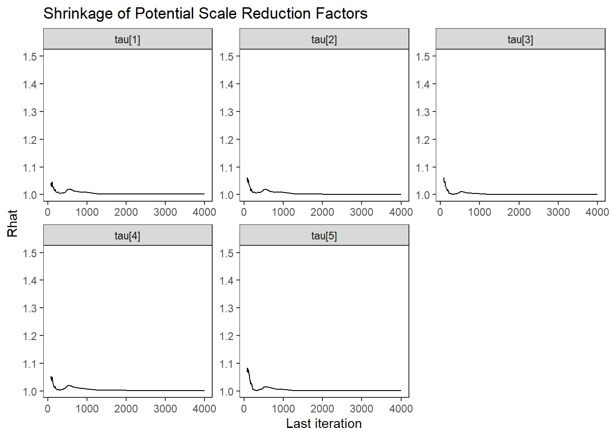
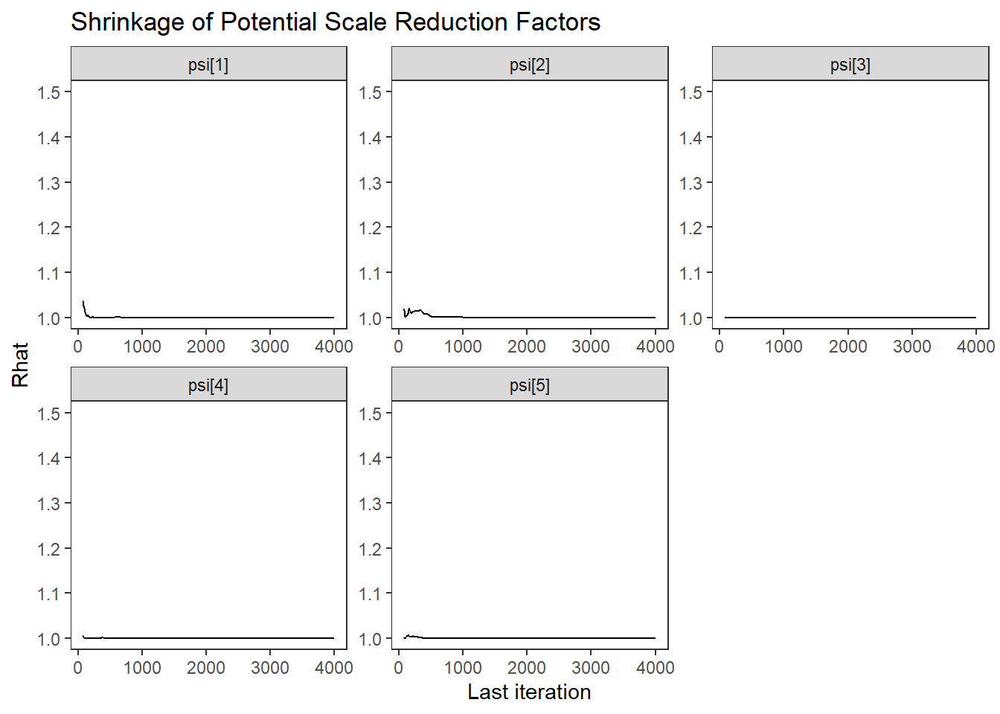
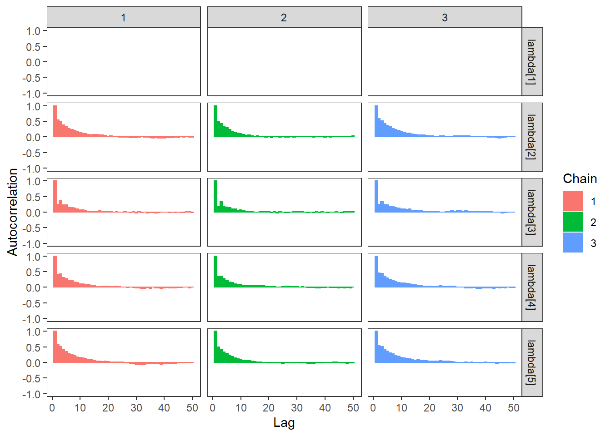
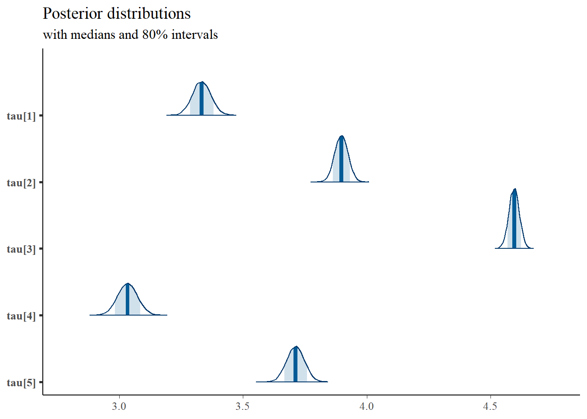
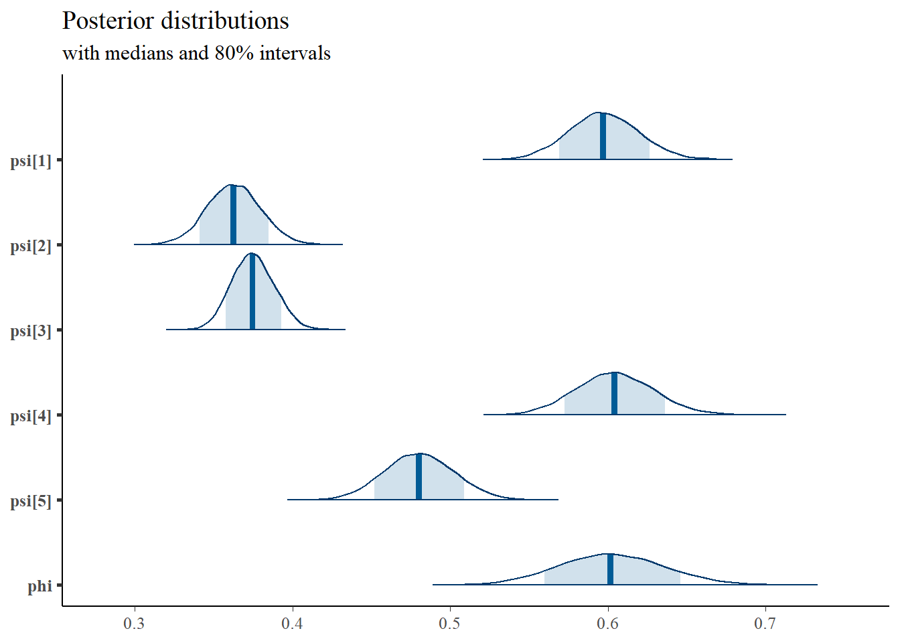

9.3 Stan - Single Latent Variable
model_cfa1 <- '
data {
int N;
int J;
matrix[N, J] X;
}
parameters {
real ksi[N]; //latent variable values
real tau[J]; //intercepts
real load[J-1]; //factor loadings
real<lower=0> psi[J]; //residual variance
//real kappa; // factor means
real<lower=0> phi; // factor variances
}
transformed parameters {
real lambda[J];
lambda[1] = 1;
lambda[2:J] = load;
}
model {
real kappa;
kappa = 0;
// likelihood for data
for(i in 1:N){
for(j in 1:J){
X[i, j] ~ normal(tau[j] + ksi[i]*lambda[j], psi[j]);
}
}
// prior for latent variable parameters
ksi ~ normal(kappa, phi);
phi ~ inv_gamma(5, 10);
// prior for measurement model parameters
tau ~ normal(3, 10);
psi ~ inv_gamma(5, 10);
for(j in 1:(J-1)){
load[j] ~ normal(1, 10);
}
}
'
# data must be in a list
dat <- read.table("code/CFA-One-Latent-Variable/Data/IIS.dat", header=T)
mydata <- list(
N = 500, J = 5,
X = as.matrix(dat)
)
# initial values
start_values <- list(
list(tau = c(.1,.1,.1,.1,.1), lambda=c(0, 0, 0, 0, 0), phi = 1, psi=c(1, 1, 1, 1, 1)),
list(tau = c(3,3,3,3,3), lambda=c(3, 3, 3, 3, 3), phi = 2, psi=c(.5, .5, .5, .5, .5)),
list(tau = c(5, 5, 5, 5, 5), lambda=c(6, 6, 6, 6, 6), phi = 2, psi=c(2, 2, 2, 2, 2))
)
# Next, need to fit the model
# I have explicitly outlined some common parameters
fit <- stan(
model_code = model_cfa1, # model code to be compiled
data = mydata, # my data
init = start_values, # starting values
chains = 3, # number of Markov chains
warmup = 1000, # number of warm up iterations per chain
iter = 5000, # total number of iterations per chain
cores = 1, # number of cores (could use one per chain)
refresh = 0 # no progress shown
)## Warning in system(paste(CXX, ARGS), ignore.stdout = TRUE, ignore.stderr = TRUE): '-
## E' not found# first get a basic breakdown of the posteriors
print(fit,pars =c("lambda", "tau", "psi", "phi", "ksi[1]", "ksi[8]"))## Inference for Stan model: 2d84cef0cbb0e7ac36bc8c7a29bca5b9.
## 3 chains, each with iter=5000; warmup=1000; thin=1;
## post-warmup draws per chain=4000, total post-warmup draws=12000.
##
## mean se_mean sd 2.5% 25% 50% 75% 97.5% n_eff Rhat
## lambda[1] 1.00 NaN 0.00 1.00 1.00 1.00 1.00 1.00 NaN NaN
## lambda[2] 0.81 0 0.05 0.72 0.78 0.81 0.85 0.92 1331 1
## lambda[3] 0.47 0 0.04 0.40 0.45 0.47 0.50 0.56 2208 1
## lambda[4] 1.11 0 0.07 0.97 1.06 1.10 1.15 1.26 1659 1
## lambda[5] 1.06 0 0.07 0.94 1.01 1.06 1.10 1.20 1364 1
## tau[1] 3.33 0 0.04 3.26 3.31 3.33 3.36 3.41 2531 1
## tau[2] 3.90 0 0.03 3.84 3.88 3.90 3.92 3.95 2022 1
## tau[3] 4.60 0 0.02 4.55 4.58 4.60 4.61 4.64 3185 1
## tau[4] 3.03 0 0.04 2.96 3.01 3.03 3.06 3.11 2349 1
## tau[5] 3.71 0 0.04 3.64 3.69 3.71 3.74 3.78 2033 1
## psi[1] 0.60 0 0.02 0.55 0.58 0.60 0.61 0.64 8311 1
## psi[2] 0.36 0 0.02 0.33 0.35 0.36 0.37 0.40 4523 1
## psi[3] 0.37 0 0.01 0.35 0.37 0.37 0.38 0.40 9997 1
## psi[4] 0.60 0 0.02 0.56 0.59 0.60 0.62 0.65 6662 1
## psi[5] 0.48 0 0.02 0.44 0.47 0.48 0.49 0.52 5167 1
## phi 0.60 0 0.03 0.53 0.58 0.60 0.62 0.67 1380 1
## ksi[1] -0.23 0 0.22 -0.67 -0.38 -0.23 -0.08 0.21 17011 1
## ksi[8] 0.85 0 0.23 0.40 0.70 0.85 1.00 1.30 12305 1
##
## Samples were drawn using NUTS(diag_e) at Fri Oct 16 13:08:53 2020.
## For each parameter, n_eff is a crude measure of effective sample size,
## and Rhat is the potential scale reduction factor on split chains (at
## convergence, Rhat=1).# plot the posterior in a
# 95% probability interval
# and 80% to contrast the dispersion
plot(fit,pars =c("lambda", "tau", "psi", "phi", "ksi[1]", "ksi[8]"))## ci_level: 0.8 (80% intervals)## outer_level: 0.95 (95% intervals)
# traceplots
rstan::traceplot(fit,pars =c("lambda", "tau", "psi", "phi", "ksi[1]", "ksi[8]"), inc_warmup = TRUE)
# Gelman-Rubin-Brooks Convergence Criterion
ggs_grb(ggs(fit, family = c("lambda"))) +
theme_bw() + theme(panel.grid = element_blank())## Warning: Removed 50 row(s) containing missing values (geom_path).
ggs_grb(ggs(fit, family = "tau")) +
theme_bw() + theme(panel.grid = element_blank())
ggs_grb(ggs(fit, family = "psi")) +
theme_bw() + theme(panel.grid = element_blank())
ggs_grb(ggs(fit, family = "phi")) +
theme_bw() + theme(panel.grid = element_blank())
# autocorrelation
ggs_autocorrelation(ggs(fit, family="lambda")) +
theme_bw() + theme(panel.grid = element_blank())## Warning in cor(X, use = "pairwise.complete.obs"): the standard deviation is zero## Warning in cor(X, use = "pairwise.complete.obs"): the standard deviation is zero
## Warning in cor(X, use = "pairwise.complete.obs"): the standard deviation is zero## Warning: Removed 150 rows containing missing values (geom_bar).
ggs_autocorrelation(ggs(fit, family="tau")) +
theme_bw() + theme(panel.grid = element_blank())
ggs_autocorrelation(ggs(fit, family="psi")) +
theme_bw() + theme(panel.grid = element_blank())
ggs_autocorrelation(ggs(fit, family="phi")) +
theme_bw() + theme(panel.grid = element_blank())
# plot the posterior density
plot.data <- as.matrix(fit)
plot_title <- ggtitle("Posterior distributions",
"with medians and 80% intervals")
mcmc_areas(
plot.data,
pars = paste0("lambda[",1:5,"]"),
prob = 0.8) +
plot_title
mcmc_areas(
plot.data,
pars = paste0("tau[",1:5,"]"),
prob = 0.8) +
plot_title
mcmc_areas(
plot.data,
pars = c(paste0("psi[",1:5,"]"),
"phi"),
prob = 0.8) +
plot_title
# I prefer a posterior plot that includes prior and MLE
# Expanded Posterior Plot
colnames(dat) <- paste0("x",1:5)
lav.mod <- '
xi =~ 1*x1 + x2 + x3 + x4 + x5
xi ~~ xi
x1 ~ 1
x2 ~ 1
x3 ~ 1
x4 ~ 1
x5 ~ 1
'
lav.fit <- lavaan::cfa(lav.mod, data=dat)
MLE <- lavaan::parameterEstimates(lav.fit)
prior_tau <- function(x){dnorm(x, 3, 10)}
x.tau<- seq(1, 5, 0.01)
prior.tau <- data.frame(tau=x.tau, dens.mtau = prior_tau(x.tau))
prior_lambda <- function(x){dnorm(x, 1, 10)}
x.lambda<- seq(0, 2, 0.01)
prior.lambda <- data.frame(lambda=x.lambda, dens.lambda = prior_lambda(x.lambda))
prior_sig <- function(x){dinvgamma(x, 5, 10)}
x.sig<- seq(.01, 1, 0.01)
prior.sig <- data.frame(sig=x.sig, dens.sig = prior_sig(x.sig))
prior_sige <- function(x){dinvgamma(x, 1, 4)}
x.sige<- seq(.1, 10, 0.1)
prior.sige <- data.frame(sige=x.sige, dens.sige = prior_sige(x.sige))
prior_ksi <- function(x){
mu <- 0
sig <- rinvgamma(1, 5, 10)
rnorm(x, mu, sig)
}
x.ksi<- seq(-5, 5, 0.01)
prior.ksi <- data.frame(ksi=prior_ksi(10000))
cols <- c("Posterior"="#0072B2", "Prior"="#E69F00", "MLE"= "black")#"#56B4E9", "#E69F00" "#CC79A7"
# get stan samples
plot.data <- as.data.frame(plot.data)
# make plotting pieces
p1 <- ggplot()+
geom_density(data=plot.data,
aes(x=`lambda[1]`, color="Posterior"))+
geom_line(data=prior.lambda,
aes(x=lambda, y=dens.lambda, color="Prior"))+
geom_vline(aes(xintercept=MLE[1, 4], color="MLE"))+
scale_color_manual(values=cols, name=NULL)+
lims(x=c(0.25, 1.5))+
theme_bw()+
theme(panel.grid = element_blank())
p2 <- ggplot()+
geom_density(data=plot.data,
aes(x=`lambda[2]`, color="Posterior"))+
geom_line(data=prior.lambda,
aes(x=lambda, y=dens.lambda, color="Prior"))+
geom_vline(aes(xintercept=MLE[2, 4], color="MLE"))+
scale_color_manual(values=cols, name=NULL)+
lims(x=c(0.25, 1.5))+
theme_bw()+
theme(panel.grid = element_blank())
p3 <- ggplot()+
geom_density(data=plot.data,
aes(x=`lambda[3]`, color="Posterior"))+
geom_line(data=prior.lambda,
aes(x=lambda, y=dens.lambda, color="Prior"))+
geom_vline(aes(xintercept=MLE[3, 4], color="MLE"))+
scale_color_manual(values=cols, name=NULL)+
lims(x=c(0.25, 1.5))+
theme_bw()+
theme(panel.grid = element_blank())
p4 <- ggplot()+
geom_density(data=plot.data,
aes(x=`lambda[4]`, color="Posterior"))+
geom_line(data=prior.lambda,
aes(x=lambda, y=dens.lambda, color="Prior"))+
geom_vline(aes(xintercept=MLE[4, 4], color="MLE"))+
scale_color_manual(values=cols, name=NULL)+
lims(x=c(0.25, 1.5))+
theme_bw()+
theme(panel.grid = element_blank())
p5 <- ggplot()+
geom_density(data=plot.data,
aes(x=`lambda[5]`, color="Posterior"))+
geom_line(data=prior.lambda,
aes(x=lambda, y=dens.lambda, color="Prior"))+
geom_vline(aes(xintercept=MLE[5, 4], color="MLE"))+
scale_color_manual(values=cols, name=NULL)+
lims(x=c(0.25, 1.5))+theme_bw()+
theme(panel.grid = element_blank())
p1 + p2 + p3 + p4 + p5 + plot_layout(guides="collect")## Warning: Removed 75 row(s) containing missing values (geom_path).## Warning: Removed 75 row(s) containing missing values (geom_path).
## Warning: Removed 75 row(s) containing missing values (geom_path).
## Warning: Removed 75 row(s) containing missing values (geom_path).
## Warning: Removed 75 row(s) containing missing values (geom_path).
# phi
p1 <- ggplot()+
geom_density(data=plot.data,
aes(x=`phi`, color="Posterior"))+
geom_line(data=prior.sig,
aes(x=sig, y=dens.sig, color="Prior"))+
geom_vline(aes(xintercept=sqrt(MLE[6,4]), color="MLE"))+
scale_color_manual(values=cols, name=NULL)+
theme_bw()+
theme(panel.grid = element_blank())
# psi
p2 <- ggplot()+
geom_density(data=plot.data,
aes(x=`psi[1]`, color="Posterior"))+
geom_line(data=prior.sig,
aes(x=sig, y=dens.sig, color="Prior"))+
geom_vline(aes(xintercept=sqrt(MLE[12,4]), color="MLE"))+
scale_color_manual(values=cols, name=NULL)+
theme_bw()+
theme(panel.grid = element_blank())
p3 <- ggplot()+
geom_density(data=plot.data,
aes(x=`psi[2]`, color="Posterior"))+
geom_line(data=prior.sig,
aes(x=sig, y=dens.sig, color="Prior"))+
geom_vline(aes(xintercept=sqrt(MLE[13,4]), color="MLE"))+
scale_color_manual(values=cols, name=NULL)+
theme_bw()+
theme(panel.grid = element_blank())
p4 <- ggplot()+
geom_density(data=plot.data,
aes(x=`psi[3]`, color="Posterior"))+
geom_line(data=prior.sig,
aes(x=sig, y=dens.sig, color="Prior"))+
geom_vline(aes(xintercept=sqrt(MLE[14,4]), color="MLE"))+
scale_color_manual(values=cols, name=NULL)+
theme_bw()+
theme(panel.grid = element_blank())
p5 <- ggplot()+
geom_density(data=plot.data,
aes(x=`psi[4]`, color="Posterior"))+
geom_line(data=prior.sig,
aes(x=sig, y=dens.sig, color="Prior"))+
geom_vline(aes(xintercept=sqrt(MLE[15,4]), color="MLE"))+
scale_color_manual(values=cols, name=NULL)+
theme_bw()+
theme(panel.grid = element_blank())
p6 <- ggplot()+
geom_density(data=plot.data,
aes(x=`psi[5]`, color="Posterior"))+
geom_line(data=prior.sig,
aes(x=sig, y=dens.sig, color="Prior"))+
geom_vline(aes(xintercept=sqrt(MLE[16,4]), color="MLE"))+
scale_color_manual(values=cols, name=NULL)+
theme_bw()+
theme(panel.grid = element_blank())
p1 + p2 + p3 + p4 + p5 + p6 + plot_layout(guides = "collect")